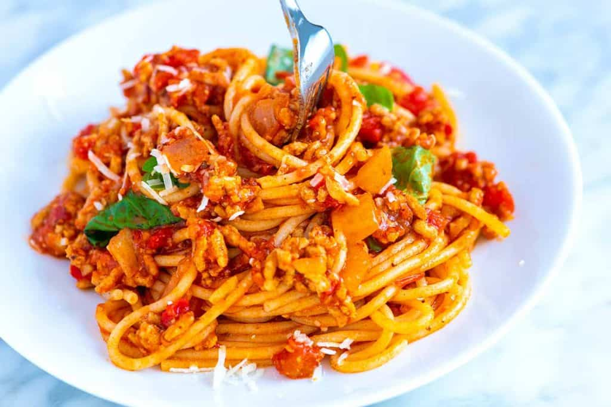

Easy weeknight friendly spaghetti and meat sauce that’s made completely from scratch. Use ground beef, turkey, pork, chicken or lamb to make this simple spaghetti recipe.

Ingredients
- 1 pound lean ground meat like beef, turkey, chicken or lamb
- 3 tablespoons olive oil
- 1 cup (130 grams) chopped onion
- 3 garlic cloves, minced (1 tablespoon)
- 2 tablespoons tomato paste
Method
- Heat the oil in a large pot over medium-high heat (we use a Dutch oven). Add the meat and cook until browned, about 8 minutes. As the meat cooks, use a wooden spoon to break it up into smaller crumbles.
- Add the onions and cook, stirring every once and a while, until softened, about 5 minutes.
- Stir in the garlic, tomato paste, oregano, and red pepper flakes and cook, stirring continuously for about 1 minute.
- Pour in the water and use a wooden spoon to scrape up any bits of meat or onion stuck to the bottom of the pot. Stir in the tomatoes, 3/4 teaspoon of salt, and a generous pinch of black pepper. Bring the sauce to a low simmer. Cook, uncovered, at a low simmer for 25 minutes. As it cooks, stir and taste the sauce a few times so you can adjust the seasoning accordingly (see notes for suggestions).
- About 15 minutes before the sauce finishes cooking, bring a large pot of salted water to the boil, and then cook pasta according to package directions, but check for doneness a minute or two before the suggested cooking time.
- Take the sauce off of the heat, and then stir in the basil. Toss in the cooked pasta, and then leave for a minute so that the pasta absorbs some of the sauce. Toss again, and then serve with parmesan sprinkled on top.